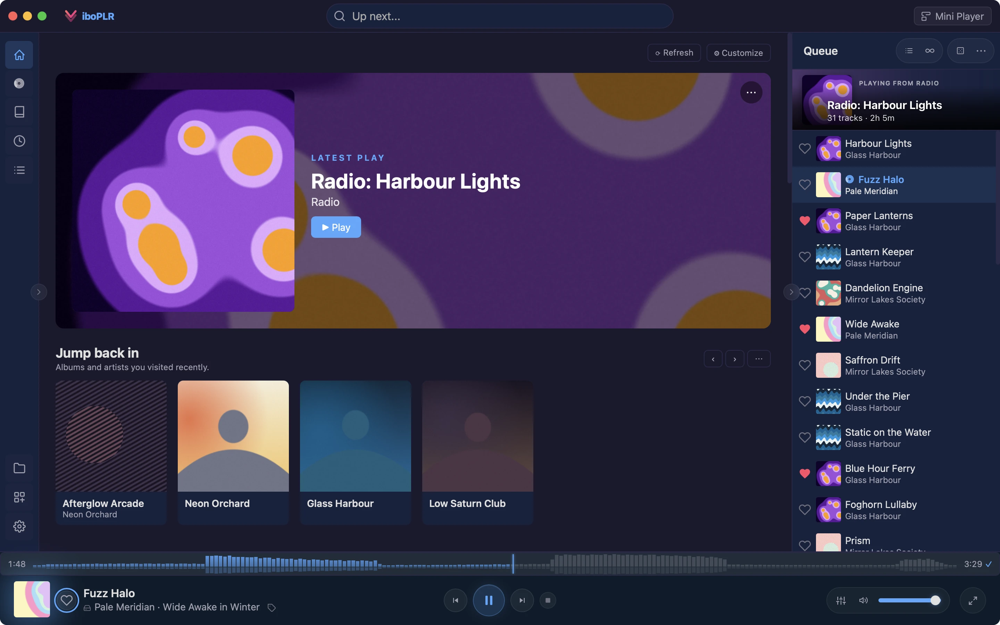

Viboplr is a free, open-source music player for macOS and Windows. It plays your local folders and your Subsonic or Navidrome server out of the box, and plugins add streaming services, lyrics, scrobbling and downloads. Everyone uses it a little differently — find your way in below.

Pick the one that sounds like you. Most people turn out to be two or three.
Bring your Spotify playlists and liked songs into a free, open-source player — and keep them on your own machine.
See what’s in it for you →Bit-perfect output, exclusive device access and sample-accurate gapless playback — verified, not assumed.
See what’s in it for you →Keep a big library in shape: bulk tag edits, album artists and compilations done right, and better copies swapped in place.
See what’s in it for you →Synced lyrics, artist bios, album reviews, similar artists and the stories behind the songs, right next to the music.
See what’s in it for you →A mini player that stays out of your way while you work, and a keyboard shortcut for everything.
See what’s in it for you →Let Claude or any MCP client search, queue, tag and organise your music — just ask.
See what’s in it for you →Your server, built in — side by side with your local folders, in one library and one queue.
See what’s in it for you →Soulseek, yt-dlp and BitTorrent plugins that hand files straight to your library.
See what’s in it for you →Radio from any song, and a home screen that digs up the albums you forgot you loved.
See what’s in it for you →Skins, hero effects, profiles — and a plugin API small enough to learn in an afternoon.
See what’s in it for you →No subscription, no ads, no premium tier. The whole app is open source.
No account to create. Your library, likes and history live on your computer. The app reports nothing about you — only anonymous usage stats, and one switch turns those off.
Built with Rust and Tauri on the system’s own webview — no bundled Chromium. It starts fast and searches big libraries instantly.
Streaming, lyrics, artwork, scrobbling and downloads come as plugins you install with one click from the gallery.
Free, open source, and built end-to-end with an AI assistant — every feature, every detail.